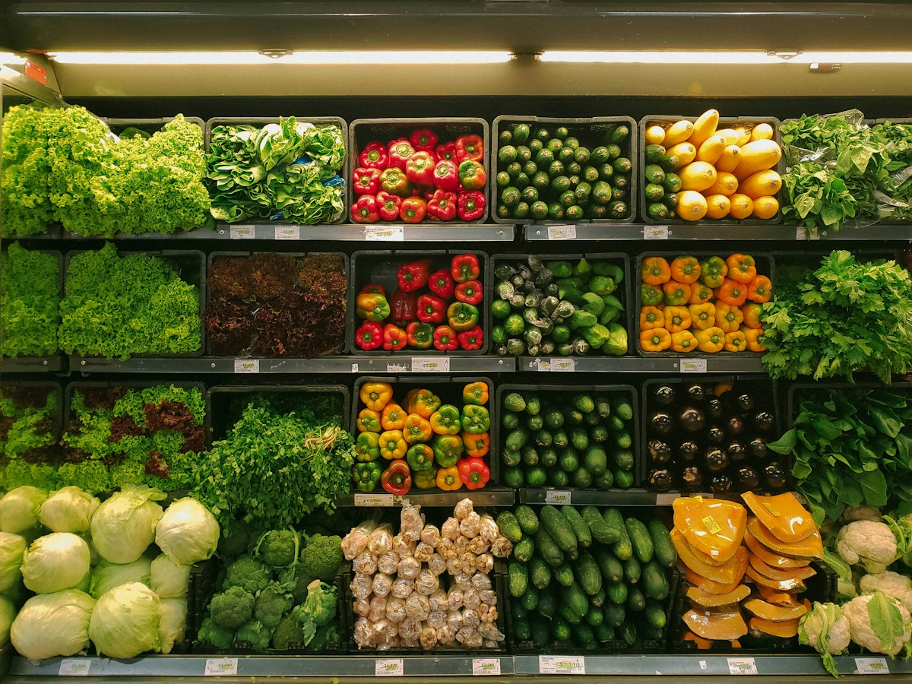
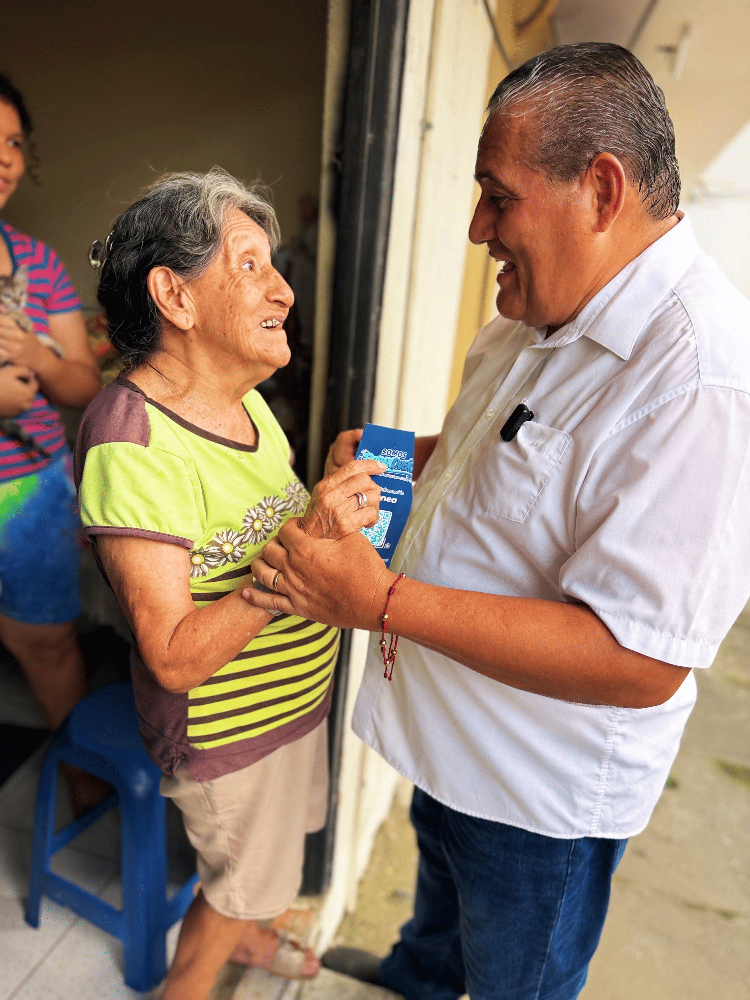
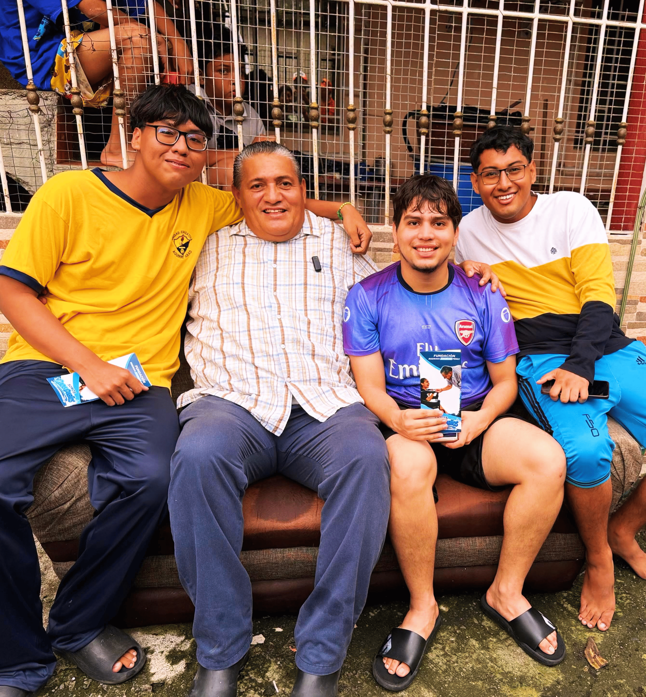
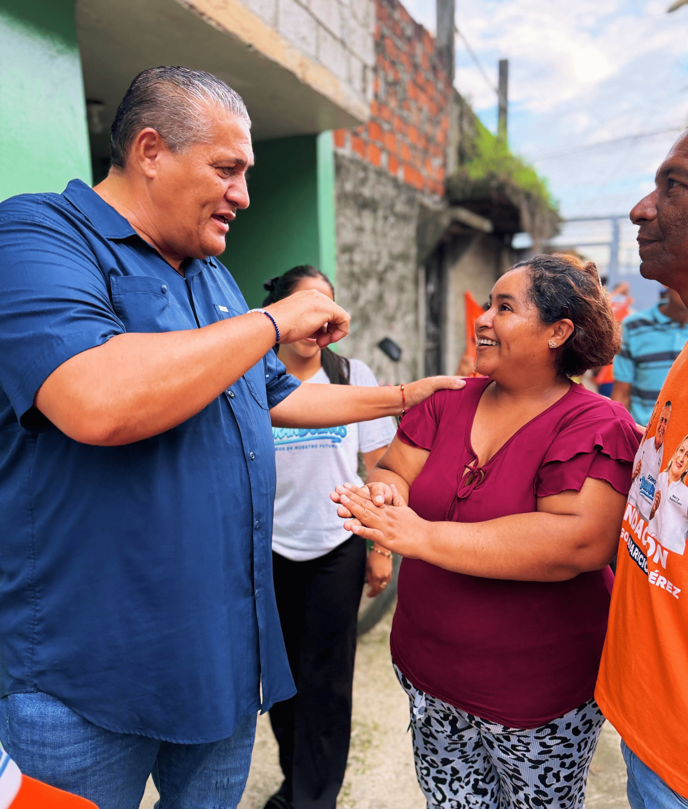
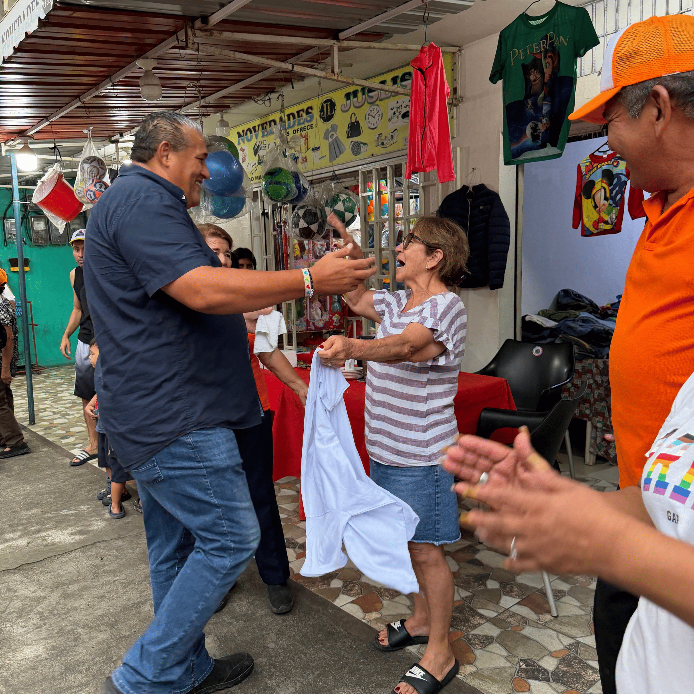
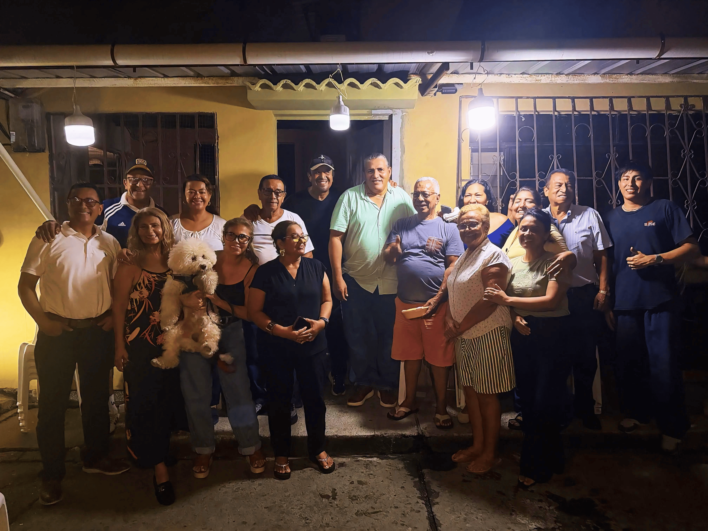

AAlimentaciónPROGRAMA A01 / 07
Canasta “Durandueña”
Una canasta de víveres cada mes para acompañar a los hogares que más lo necesitan.
10.000hogares como meta
Conocer la propuesta Alimentación, salud y oportunidades.
Un compromiso con la vida de tu familia.

Resolver los problemas de servicios básicos, legalización, orden y seguridad es una prioridad. También lo es acompañar a las familias que más lo necesitan.
El Plan Social Familiar propone llevar esa ayuda a su máxima expresión, desde el primer año de la administración municipal de Rodrigo Aparicio.
Descargar el plan completo ↓familias como meta de cobertura
programas para acompañarlas
sistema de inscripción y seguimiento
El artículo 249 del COOTAD establece una asignación mínima del 10 % de los ingresos no tributarios municipales para programas sociales de atención prioritaria.
Cada familia tiene su propia historia.
Conoce las propuestas que buscan acompañarla.

AAlimentaciónUna canasta de víveres cada mes para acompañar a los hogares que más lo necesitan.
Aprender, formalizar y hacer crecer una idea con capacitación gratuita y acompañamiento productivo.
Las mascotas también son familia: atención básica, prevención y cuidado responsable.
 DSalud comunitaria
DSalud comunitariaAtención primaria y prevención para acompañar el bienestar de las familias afiliadas.
Un apoyo para la familia ante la pérdida de uno de sus integrantes.
Acercar la formación universitaria, técnica y continua a los jóvenes de Durán.
Ayudas económicas para estudiar, emprender o mejorar la vivienda de las familias afiliadas.
El plan contempla programas institucionales con presupuesto, cobertura, requisitos públicos y mecanismos de evaluación.
Escuchar, conversar y estar presentes.
Cada encuentro empieza con nuestra gente.



03 / COMPROMISO CON LA COMUNIDAD
A través de la Fundación Rodrigo Aparicio Pérez, la ayuda social ha tomado forma en donaciones, brigadas médicas y veterinarias, capacitaciones y ferias de emprendimiento.
“Jamás dejaremos de lado la ayuda social.”Rodrigo Aparicio
FUNDACIÓN APARICIO PÉREZ
Labor social y ayuda humanitaria para las familias de Durán. Conoce los encuentros, las iniciativas y el trabajo de la fundación.
Registra los datos del jefe o jefa de hogar y de los integrantes de tu familia para el carnet familiar.

El registro es el primer paso del proceso. La calificación y el acceso a los beneficios estarán sujetos a los requisitos de cada programa.
Consulta el plan completo ↗Todos los campos son obligatorios. Si no hay menores en uno de los grupos de edad, escribe 0.
EL FUTURO EMPIEZA CON NOSOTROS